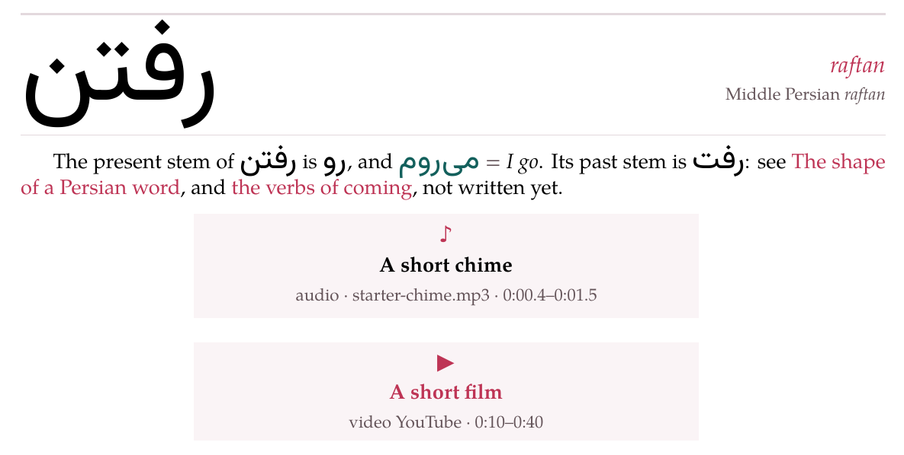

Picture, recording and video lines
A picture, a recording and a video each stand on a line of their own, written the same way: an exclamation mark (an at sign for a video), the caption in square brackets, the file or the address in round ones, and, if you like, the layout in braces.
{width=40 align=center}{width=30 align=left offset=10}{width=50 align=center}
You rarely type these lines. The editor’s Image button (or a picture pasted, or dropped on the source) and its Audio button (or recordings dropped) store the file in the document and put the line in for you; Video asks for a YouTube address and writes its line. The caption they write is the Italian placeholder didascalia, left selected, so the caption you type next replaces it. In the preview or the reading view, a click on a picture — or the ⚙ layout handle of a recording or a video — opens a panel that sets the layout and writes it into the braces.
1. The layout in braces#
The same words place all three, as percentages of the text column:
| Word | What it does | Values | Left out |
|---|---|---|---|
width= | how wide the figure is | 5 to 100 | 60 |
align= | which side it stands on | left, center, right | left |
offset= | moves it sideways, from where align puts it; a minus to the left | −100 to 100 | 0 |
start=, end= | the stretch a recording or a video plays | a time (below) | the whole |
A number outside its range is taken as the nearest end of it, and however far offset pushes it, a figure never starts more than a quarter of the column beyond either edge. The words may come in any order, and start and end mean nothing to a picture. Both renderers compute the place the same way, so a figure stands at the same place on the screen and on paper.
The layout panel has a Width slider (10 to 100), a Shift slider (−50 to 50), the three Align buttons, and for a recording or a video a Clip row with its start and end; what it sets is saved into the markdown — the PDF uses the same layout.
2. Pictures#
{width=55 align=center offset=-10}- The path is
images/and a file name - : letters, digits,
.,_and-, starting with a letter or a digit. No folders underimages/, and no web address: a picture is a file of the document, in its ownimages/folder. A path that breaks these rules shows immagine non valida and the path, and prints nothing. - The file
- is a PNG, a JPEG, an SVG or a PDF (its first page). The studio keeps a vector twin of each vector picture — an SVG for a PDF, to show it on the screen, a PDF for an SVG, to print it — so it stays sharp at any width.
- The caption
- is shown under the picture, small and grey. It may hold bold, italics and target-language words, but no square brackets — so no marks. It may be empty:
. - Nothing may follow the round brackets but the braces
- : a title in quotes,
(images/x.png "a title"), makes the line ordinary text. - A picture inside a sentence is not read.
See  hereshows See !a map here — only exercises take pictures in their text.
A picture whose file the document does not have — deleted, or named wrongly — is shown missing, and a PDF build stops on it and names it.
The Images… button lists the document’s pictures, to put one in again or delete it.
3. Recordings#
A recording is written exactly as a picture is, with its path under audio/:
{width=60}{width=60 start=0.4 end=1.5}- The file
- is an MP3, M4A, AAC, Ogg (
.ogg,.oga), Opus, WAV, FLAC or WebM recording — the extension says which, in any case — stored in the document’saudio/folder, at most 30 MB. A path underaudio/that does not end in one of these shows not an audio file: and the path, and prints nothing. startandend- cut out the stretch it plays: seconds (
90,65.5), minutes and seconds (1:30,1:05.25) or hours too (1:02:03), to the hundredth of a second. Either may be left out — no start is the beginning, no end the end — and an end that is not after the start is ignored. - On the screen
- it is a player laid out like a figure, which plays its stretch and no more: started from outside it, it jumps to its start, and it stops at its end. Its ⚙ layout handle shows when you point at it (a click on its caption opens the panel too). This guide draws players and videos without the handle, since it has no editor to write the layout into.
- On paper
- it cannot play, so it is a card placed like the figure: a ♪, the caption, and audio · starter-chime.mp3 · 0:00.4–0:01.5 in small grey type — dal … or fino a … when only one end is given.
The Audio button takes several files at once; Recordings… lists the document’s recordings — ▶ to play one, a click to put it in again, in use beside the ones the text names, ✕ to delete — and, when the studio runs inside Parseh, the clips cut from books and videos that wait in the clip tray, each with Add.
4. Videos#
A video is a YouTube video, written like a picture with @ in place of the !:
@[A short film](https://www.youtube.com/watch?v=aqz-KE-bpKQ){width=70 align=center start=0:10 end=0:40}- The address
- may be a
watch?v=address, ayoutu.be/one, ashorts/,embed/orlive/one, or the video’s eleven-character id alone. Anything else — another site’s address included — shows video non valido and the address, and prints nothing. startandend- are whole seconds (
90,1:30): YouTube takes nothing finer, and a fraction is dropped. A clipped video plays its stretch every time, not only the first. - On the screen
- it is YouTube’s privacy-minded player, laid out like a figure, with its ⚙ layout handle on hover. On paper it is a card with a ▶, the caption and video YouTube and the stretch, and the card is a link that opens the video at its start.
5. On paper#
A PDF cannot play a recording or a video, so each becomes a card, placed where the figure would stand: the recording’s names its file and its stretch, the video’s is a link that opens YouTube at its start.

A vocabulary entry, a paragraph, a recording and a video, as the PDF sets them.
6. Where else they go#
A picture, a recording or a video may stand in a > box like any other block. Pictures, recordings and videos are counted as one series in a document, which is how the layout panel finds the line it rewrites.
7. The starters’ pictures and recording#
The starter pages of + New show a picture and a recording with files that ship with the studio: images/starter-apple.svg, images/starter-house.svg and audio/starter-chime.mp3 — the ones on this page. The first save of a document that names one copies it into the document’s own folder, and from then on it is the document’s file like any other. Deleted there with ✕, it stays deleted: no later save brings it back. To show a picture or a recording of your own instead, upload it and let the line name it.